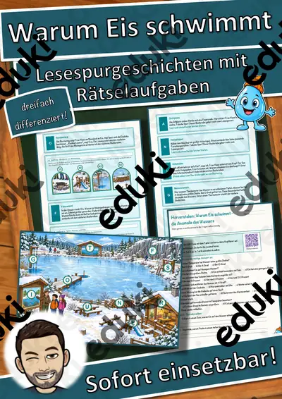
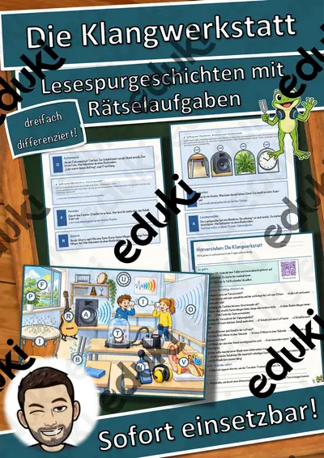
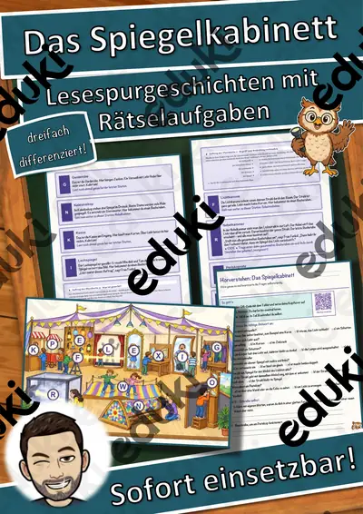

Materialpaket Lesespurgeschichten Physik Klasse 8 – Elektrizität, Magnetismus und Optik: 10 Lesespuren mit Rätselaufgaben, dreifach differenziert

Materialpaket Lesespurgeschichten Physik Klasse 8 – Wärme und Energie: 12 Lesespuren mit Rätselaufgaben, dreifach differenziert

Materialpaket Lesespurgeschichten Physik Klasse 7: 6 Lesespuren mit Rätselaufgaben, dreifach differenziert

Materialpaket Lesespurgeschichten Physik Klasse 5: 4 Lesespuren mit Rätselaufgaben, dreifach differenziert

Lesespur: Die Wärmedämmung: wo das Haus Wärme verliert – Lesespurgeschichte mit Rätseln (Klasse 9)

Lesespur: Die Lichterkette: Reihenschaltung und Parallelschaltung – Lesespurgeschichte mit Rätseln (Klasse 8)

Lesespur: Richtig lüften im Winter: Luftfeuchtigkeit, Taupunkt und Schimmel – Lesespurgeschichte mit Rätseln (Klasse 9)

Lesespur: Warum Eis schwimmt: die Anomalie des Wassers – Lesespurgeschichte mit Rätseln (Klasse 7)

Lesespur: Polarlichter: wenn der Himmel grün leuchtet – Lesespurgeschichte mit Rätseln (Klasse 8)

Lesespur: Die Wintersonnenwende: warum der Dezember so dunkel ist – Lesespurgeschichte mit Rätseln (Klasse 7)

Lesespur: Das Zeitlabor: wie Uhren die Zeit messen und warum wir umstellen – Lesespurgeschichte mit Rätseln (Klasse 8)

Lesespur: Die Stromrechnung – Lesespurgeschichte mit Rätseln (Klasse 10)

Lesespur: Der Satellit – Lesespurgeschichte mit Rätseln (Klasse 8)

Lesespur: Das Echolot – Lesespurgeschichte mit Rätseln (Klasse 8)

Lesespur: Der Winterreifen – Lesespurgeschichte mit Rätseln (Klasse 8)

Lesespur: Die Klangwerkstatt – Lesespurgeschichte mit Rätseln (Klasse 5)

Lesespur: Das Spiegelkabinett – Lesespurgeschichte mit Rätseln (Klasse 5)

Lesespur: Das Schattentheater – Lesespurgeschichte mit Rätseln (Klasse 5)

Lesespur: Der Nebel – Lesespurgeschichte mit Rätseln (Klasse 8)

Lesespur: Der Dynamo – Lesespurgeschichte mit Rätseln (Klasse 9)

Lesespur: Die Thermoskanne – Lesespurgeschichte mit Rätseln (Klasse 8)

Lesespur: Der Kran – Lesespurgeschichte mit Rätseln (Klasse 8)

Lesespur: Die Röntgenröhre – Lesespurgeschichte mit Rätseln (Klasse 9)

Lesespur: Die Leuchtdiode – Lesespurgeschichte mit Rätseln (Klasse 9)

Lesespur: Die Glasfaser – Lesespurgeschichte mit Rätseln (Klasse 9)

Lesespur: Der Laser – Lesespurgeschichte mit Rätseln (Klasse 9)

Lesespur: Die Sonne – Lesespurgeschichte mit Rätseln (Klasse 9)

Lesespur: Der Haartrockner – Lesespurgeschichte mit Rätseln (Klasse 8)

Lesespur: Der Baukran – Lesespurgeschichte mit Rätseln (Klasse 8)

Lesespur: Die Fahrradpumpe – Lesespurgeschichte mit Rätseln (Klasse 8)
Keine Materialien gefunden – versuch einen anderen Suchbegriff oder Filter.
Physik als Geschichte mit Aufgabe
Physikalische Zusammenhänge verstehen Kinder besser, wenn sie sie in Situationen wiederfinden. Die Lesespurgeschichten dieser Seite verpacken Themen in Alltagsszenen: Wer die Station mit der Lichterkette bearbeitet, muss Schaltungen aus dem Text erschließen, bevor er den Weg weiterlesen kann. Dazu kommen einige Prüfungstrainings und Lückentexte.
Die Themen sind so gewählt, dass sie Verbindungen zwischen Schulstoff und Alltag herstellen: Wer einmal eine Lichterkette durchgelesen hat, versteht eine Schaltung leichter. Wo es sinnvoll ist, werden Begriffe wie Spannung, Strom oder Schallwelle in der Geschichte selbst erklärt, nicht erst im Anhang.
Grundschule: Sonnensystem und Strom
Für Klasse 3 und 4 gibt es das „Materialpaket Sonnensystem (Flipbook, Steckbriefe, Tafelmaterial)“, dazu Arbeitsblätter zu „LED“ und „Glühlampe/Glühbirne“ als Einstieg in das Thema Strom. Die Reihe zu den Planeten gibt es auch spanisch, etwa als „Sistema solar“.
Klasse 5 bis 7: Sinne, Licht und Schall
Hier stehen die Erfahrungswelten im Vordergrund: „Die Klangwerkstatt“, „Das Spiegelkabinett“, „Das Schattentheater“ und „Der Nachthimmel“ in Klasse 5, „Der Regenbogen“ in Klasse 6. In Klasse 7 kommen „Warum Eis schwimmt“, „Der Mond“, „Schwimmen und Sinken“ und „Der Magnetismus“ hinzu.
Klasse 8 bis 10: Technik und Energie
Das Zentrum bildet Klasse 8 mit Titeln wie „Die Lichterkette“, „Polarlichter“, „Der Satellit“ und „Das Echolot“. Klasse 9 bringt „Die Wärmedämmung“, „Richtig lüften im Winter“, „Der Dynamo“ und „Die Röntgenröhre“. Für Klasse 10 passt „Die Stromrechnung“, ein Thema, das jeder Haushalt kennt und das Rechnen mit Leistung und Arbeit anwendungsnah übt.
Häufige Fragen
Wie unterscheiden sich die Niveaustufen?
Jede Lesespur liegt in drei Stufen vor: Der Inhalt bleibt gleich, Textlänge und Hilfen unterscheiden sich.
Gibt es Material zur Astronomie?
Ja, vom Sonnensystem in der Grundschule über „Der Nachthimmel“ und „Der Mond“ bis zu „Der Satellit“ in der Mittelstufe.
Sind Formeln und Rechenaufgaben enthalten?
Vor allem in den höheren Klassen, etwa bei „Die Stromrechnung“. In der Orientierungsstufe geht es meist um Beobachten und Beschreiben.
Kann ich damit eine Unterrichtseinheit komplett planen?
Als Baustein ja, als Lehrwerk-Ersatz nein. Die Geschichten passen zu Einstieg, Vertiefung oder Sicherung.